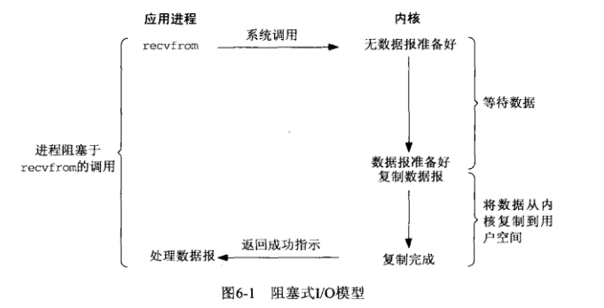
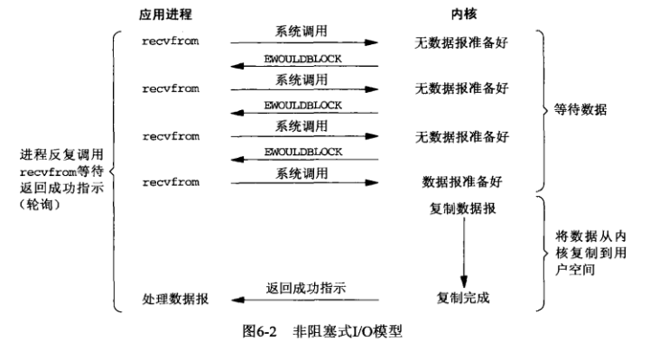
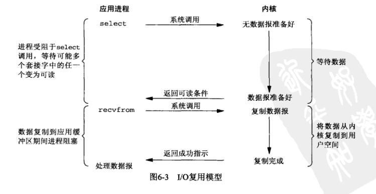
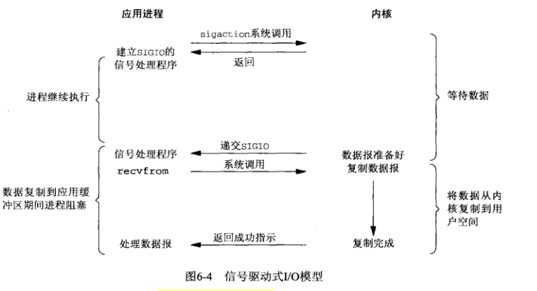
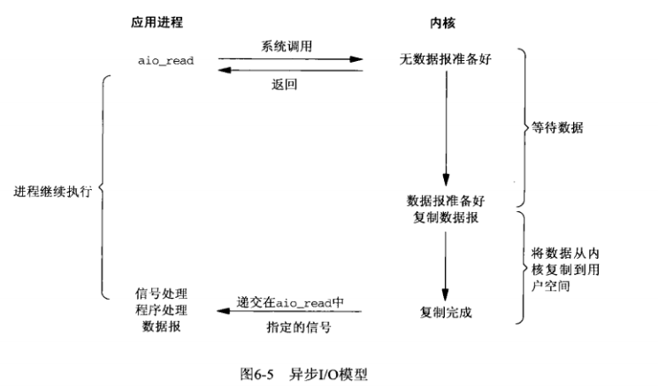
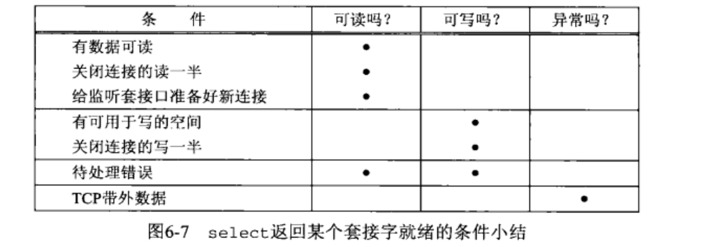
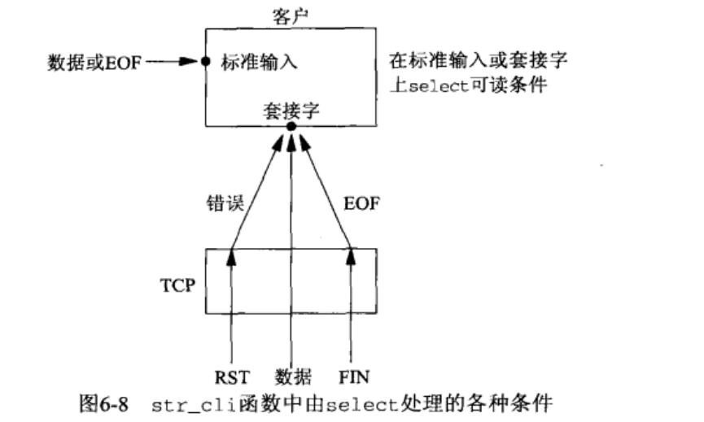
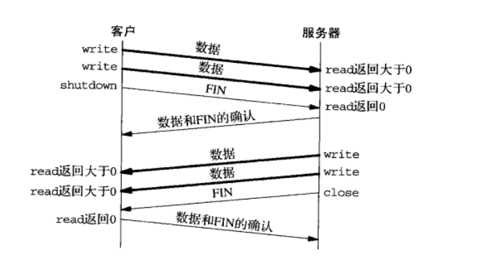
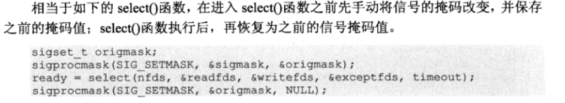

UNIX网络编程（六）
I/O模型
- 阻塞型I/O
- 非阻塞型I/O
- I/O复用
- 信号驱动式I/O（SIGIO）
- 异步I/O（POSIX的aio_系列函数）
阻塞型I/O

例子：本书把recvfrom当作是系统调用（不同操作系统可能不太一样），因为涉及到内核与应用进程的切换。在调用recvfrom到返回的这一段时间内，是被阻塞的。
非阻塞型I/O
特点用一句话概括。进程把套接字设置成非阻塞型是在通知内核：当所请求的I/O操作非得把本进程投入睡眠才能完成时，不要投入睡眠而是返回一个错误。

如图，当一个应用进程像这样对一个非阻塞描述符循环调用recvfrom，称为轮询（polling）。应用进程持续访问内核，查看内核是否就绪。这样会造成大量的CPU时间损耗，值在一小部分系统中会应用到。
I/O复用

调用select或poll，阻塞在这两个系统调用的某个之上。
注意：相比于图6-1，该方法使用了两次系统调用（select，recvfrom）
信号驱动式I/O

其优势在于，等待数据报到达之前，不需要阻塞。
异步I/O

I/O复用的场合
- 当客户使用多个描述符时（套接字和交互式输入），必须使用I/O复用。
- 一个用户同时处理多个套接字
- 一个服务器既要处理listen套接字，又要处理connect套接字
- 一个服务器既要处理TCP，又要处理UDP
- 一个服务器处理多个服务或者协议
select函数
调用select告知内核对哪些描述符（读、写或异常条件）感兴趣以及等待多长时间。事实上任何描述符都可以使用select来进行测试。
1 | |
关于fd_set
要怎么来表示多个描述符呢？
定义了一种数据类型fd_set和四个宏，具体实现不需了解：
1 | |
使用方法：
1 | |
注意，描述符集参数是 值-结果参数。原本为1的位，调用完后可能为0；
此外，maxfdp1也容易忘记+1。是在最大描述符的基础上+1
关于struct timeval
其中，struct timeval 的结构如下，指定了这段时间的秒数和微秒数：
1 | |
这个参数有三种可能：
- 永远等待下去：指针设置为空
- 等待一段固定时间：设置秒数和微秒数
- 根本不等待：检查描述符后里面返回，这就是之前提到的轮询。把秒数和微秒数设置为0。
就绪条件

对str_cli进行修改
之前我们遇到的问题是：客户端进程阻塞在fgets，不能及时读取socket描述符的信息。下面来进行改进：
- 如果对端发送数据，那么该套接字变为可读，返回一个大于0的值（读入字节数）
- 如果对端发送一个FIN，那么该套接字变为可读，read返回一个0（EOF）
- 如果对端发送一个RST（对端主机崩溃或重新启动），那么该套接字变为可读，read返回一个-1（errno含有错误码）

1 | |
我们再来使用netstat、ps、kill等工具进行检测。发现：
1 | |
客户端进程不再阻塞于fgets的调用，所以当服务器子进程被杀死之后——服务器模拟崩溃之后，客户端进程的readline接收到EOF，所以直接报错。而不是继续再fgets等待用户的输入
如何查看虚拟终端号（tty）呢？使用w指令
1 | |
shutdown函数
一般来说关闭连接使用close函数，但是有两个限制：
- close吧描述符的counter-1，只有counter为0时才关闭套机字
- close终止读和写两个方向上的数据传送

这就是另一个需要解决的问题：有的时候客户端发送完数据后，直接就发送FIN了，是要告知服务器我已经发送完数据了。此时客户端仍想要保持套接字打开，继续接收读取服务器发回来的数据。这就要用到shutdown函数
1 | |
str_cli的再修改
1 | |
使用selcet实现服务器
使用select函数可以替换掉每次fork一个子进程。实现过程与上面客户端的str_cli类似。不再赘述。
pselect函数
1 | |
pselect与select仅有以下几点区别
timeout的结构变为秒和纳秒
select的timeout是值-结果参数，pselect的timeout不会改变
多了一个信号掩码参数。

poll函数
1 | |
| 常量 | 说明 |
|---|---|
| POLLIN | 普通或优先级带数据可读 |
| POLLRDNORM | 普通数据可读 |
| POLLRDBAND | 优先级带数据可读 |
| POLLPRI | 高优先级数据可读 |
| POLLOUT | 普通数据可写 |
| POLLWRNORM | 普通数据可写 |
| POLLWRBAND | 优先级带数据可写 |
| POLLERR | 发生错误 |
| POLLHUP | 发生挂起 |
| POLLNVAL | 描述字不是一个打开的文件 |
注意：后三个只能作为描述字的返回结果存储在revents中，而不能作为测试条件用于events中
| timeout值 | 说明 |
|---|---|
| INFTIM | 永远等待 |
| 0 | 立即返回，不阻塞进程 |
| ＞0 | 等待指定数目的毫秒数 |
小结
- 回顾一下提到的五种I/O模型：阻塞型I/O、非阻塞型I/O、I/O复用、信号驱动式I/O、异步I/O
- 用于I/O复用模型的select函数
- 解决输入结束后，数据仍在去往或来自服务器管道的问题。使用shutdown函数
- 注意shutdown和close的区别
- 混合使用stdio和read/write的危险
- pselect和select的区别
- poll函数的功能与select类似，不过能为流设备提供额外信息
参考资料
[1] https://blog.csdn.net/hnlyyk/article/details/48346227
[3] https://blog.csdn.net/djinglan/article/details/8302938
[2]《UNIX网络编程 卷1 套接字联网API》